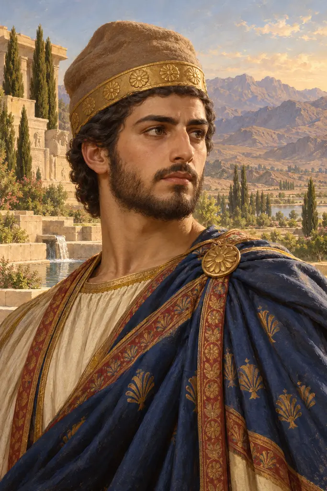
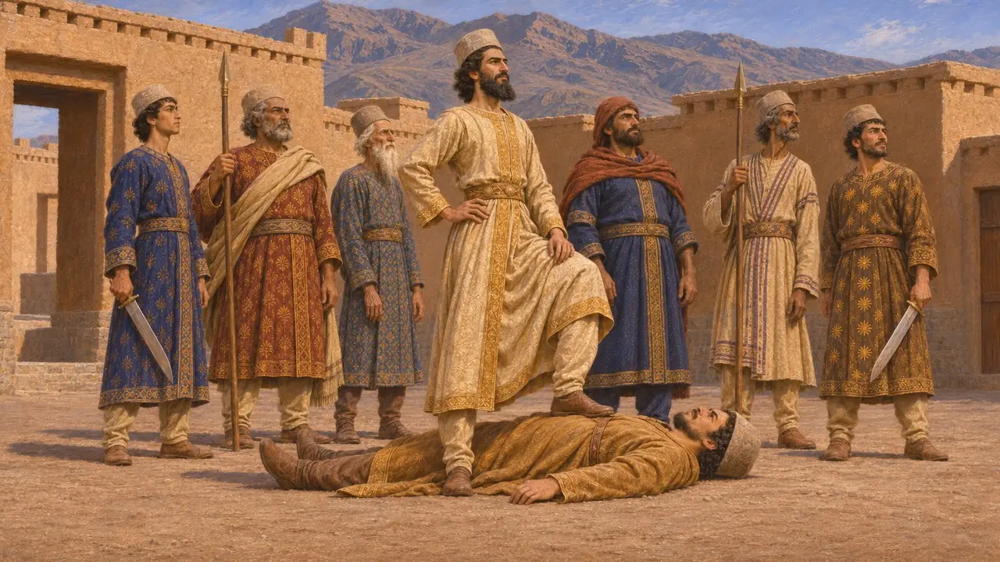
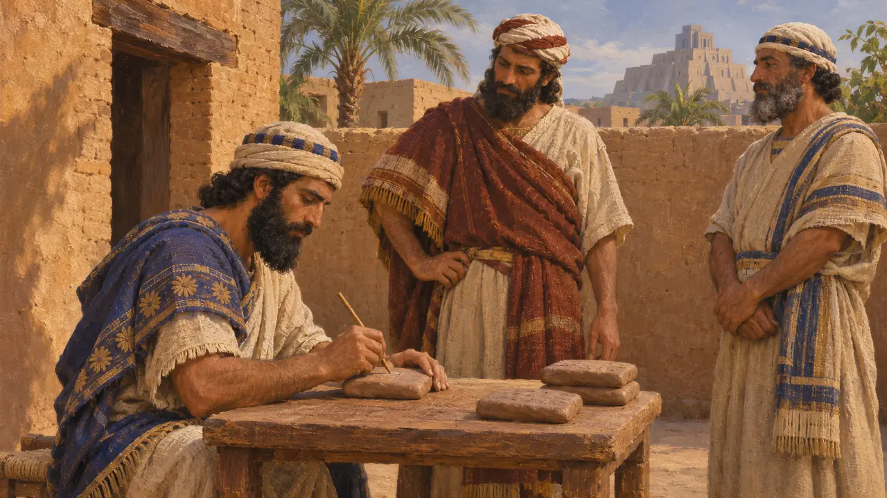
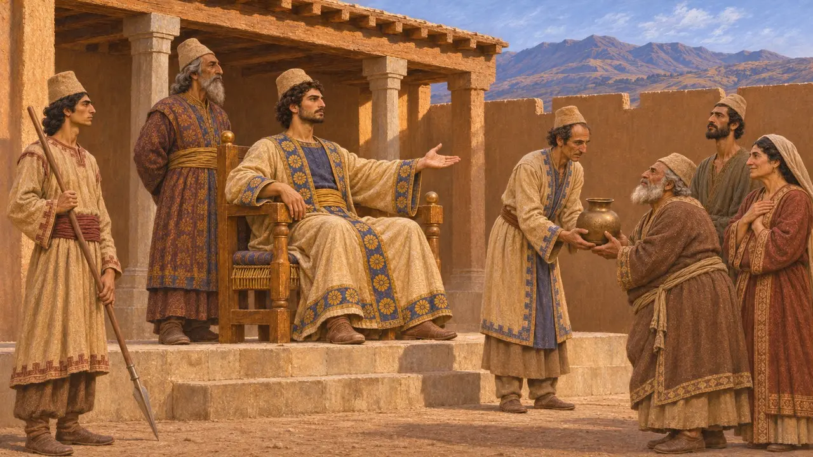
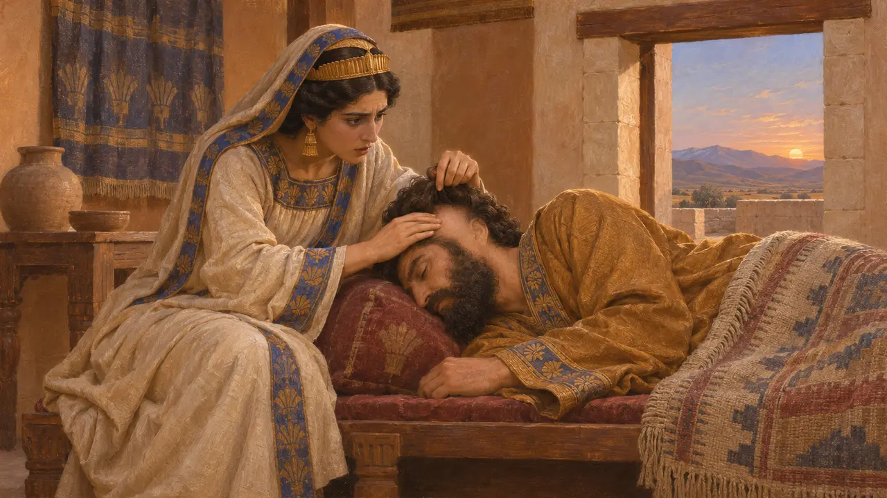
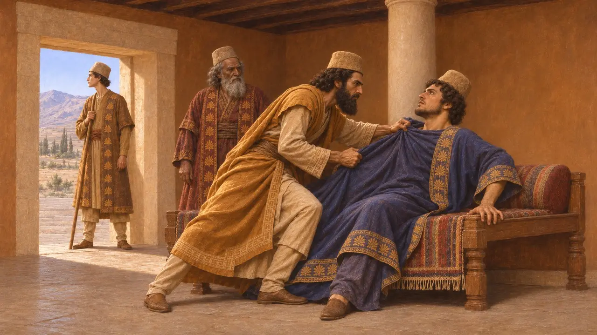

紀元前522年、キュロスの次男バルディヤを名乗る男が数か月にわたり王位にあった。ダレイオスは彼を殺し、その男は死んだ王子の名を騙ったマギの一人、ガウマータであったと主張した。この話はダレイオス自身の王権を正当化するものであり、殺された王が偽者だったのか、それともキュロスの実の息子だったのか、歴史家の間では今なお議論が続いている。
ゲームでは： ゲームの年代記は彼を両方の名で呼び、その統治を紀元前522年の数か月間としている。彼が偽者だったとするダレイオスの主張と、本物のバルディヤであった可能性があるとする現代の見解を併記している。

ベヒストゥンにおけるダレイオスの記録
同時代の記録ベヒストゥン碑文でダレイオスは、カンビュセスがエジプト遠征の前に弟バルディヤをひそかに殺していたと語る。紀元前522年3月、ガウマータというマゴスがバルディヤを名乗ってペルシスで蜂起し、7月には諸国の王となった。その後カンビュセスは死去した。紀元前522年9月、ダレイオスは名を挙げた6人の協力者とともに、メディアのシカヤウヴァティシュの砦でガウマータを討った。浮彫には、ダレイオスの足の下に仰向けに倒れたガウマータが描かれている。
DB §10-13, §68

実在した治世の痕跡
同時代の記録バビロニアの商取引の粘土板にはバルディヤの王としての治世で日付が記されており、数か月のあいだ、現地の書記たちは彼を正統な支配者として扱っていた。ダレイオス自身は、ガウマータが礼拝の場を破壊し、民から牧地、家畜、奴僕、家屋を奪ったが、自分がそれらを元に戻したと述べている。これらの施策の中身ははっきりしないが、独自の政策を持つ支配者であったことをうかがわせる。
DB §14; A. Kuhrt, The Persian Empire: A Corpus of Sources, 2007

ヘロドトスとマギのスメルディス
古代の記述ヘロドトスはこの王子をスメルディスと呼び、カンビュセスが夢を見たのちにプレクサスペスに命じて彼を殺させたと記す。その後、マギの兄弟二人が王位を奪った。そのうちの一人もスメルディスという名で、王子に瓜二つであったという。ヘロドトスによれば、この偽王は臣民に3年間の貢納と兵役を免除し、その死はペルシア人を除くアジアのすべての民に悼まれた。七人のペルシア人がマギを討ち、ペルシア人はその日をマゴフォニアと呼ばれる祭日として守り続けた。
Herodotus 3.30, 3.61-79

切り落とされた耳
後世の伝説ヘロドトスによれば、オタネスは王に疑いを抱いた。王の妃の一人であった娘のファイデュメが、王の眠っている間にその耳を探ったところ、耳がなかった。かつてキュロスが罰としてそのマギの耳を切り落としていたのである。この話は正体を暴かれる偽者という民話の型をなしており、ヘロドトス以外にこれを裏づけるものはない。
Herodotus 3.68-69

僭称者か王子か
係争中多くの歴史家は、王家の傍系出身であったダレイオスがキュロスの実子を殺し、僭称者の話をでっち上げたのではないかと疑っている。王の弟が誰にも気づかれずひそかに殺されたという話は信じがたく、しかもダレイオスの碑文は自らを正当化するために書かれたものである。一方で、彼の説明を否定する証拠はないと反論する者もいる。ヘロドトスや、そのマギをスフェンダダテスと呼ぶクテシアスは詳細を加えているが、おそらく公式の説明に依拠しているため、この問題は未解決のままである。
P. Briant, From Cyrus to Alexander, 2002; Ctesias, Persica
出典
- DB §10-14, §68
- Herodotus 3.30, 3.61-79
- P. Briant, From Cyrus to Alexander, 2002
- A. Kuhrt, The Persian Empire: A Corpus of Sources, 2007
- Ctesias, Persica
- M. Dandamaev, A Political History of the Achaemenid Empire, 1989